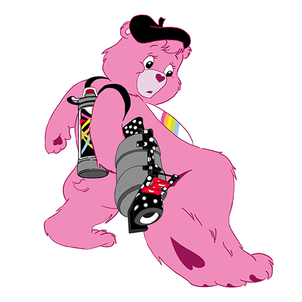

My Drawings
Document
My Drawings 나의 그림들
- Duckhwan
- Tozzami
- Delpy
Duckhwan's profile.
I drawed it last years. At first, she gave me a draw of profile and I wanna return to her.
Her character in online is a Cheerbear of animation. So I searched referances.
And then I mixed and drawed it. I'm really satified with it
